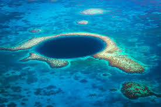
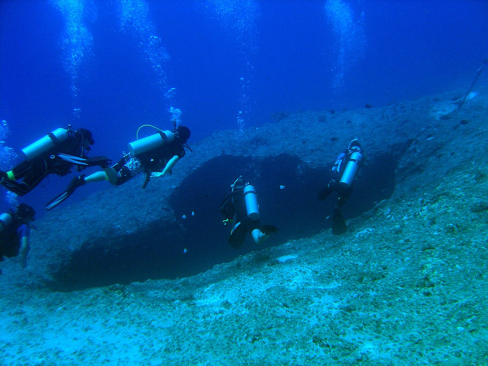

What is the Great Blue Hole?

The Great Blue Hole is a massive underwater sinkhole located near the coast of Belize. It is considered one of the most extraordinary dive sites in the world and is a UNESCO World Heritage site. The hole is circular in shape and measures approximately 300 meters (984 feet) across and 124 meters (407 feet) deep.
The Formation of the Great Blue Hole

The Great Blue Hole was formed during several ice ages when sea levels were much lower than they are today. It is believed to be a collapsed cave system that was once above sea level. As the sea levels rose, the cave system filled with water, creating the stunning underwater sinkhole we see today.
Diving at the Great Blue Hole

Diving in the Great Blue Hole is a dream come true for many scuba enthusiasts. The crystal-clear waters and unique geological formations attract divers from all over the world. Inside the hole, you can encounter various marine species, including reef sharks, giant groupers, and colorful corals.